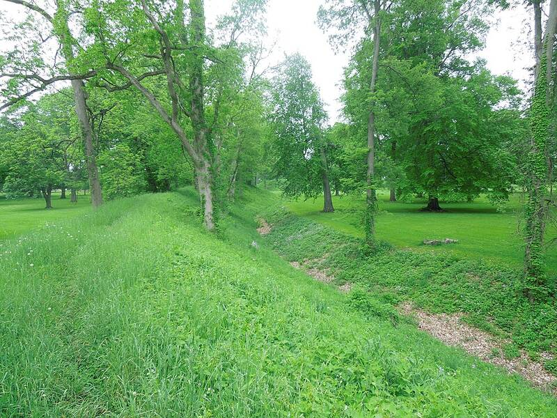

Newark Earthworks
Newark, Ohio, about AD 1 to 400

The largest set of geometric earthen enclosures in the world, built by the Hopewell culture: a great circle and an octagon joined to a circle. The Octagon tracks the 18.6-year cycle of moonrises and moonsets with remarkable precision. A UNESCO World Heritage Site since 2023. 1
Open in the interactive Watcher
Sources
- Newark Earthworks Wikipedia